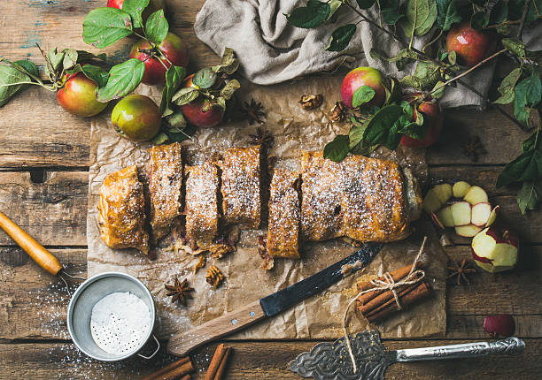

apfelstrudel,Austria

Description
More commonly known as Apple Strudel, Apfelstrudel is a popular pastry in Austria and other parts of Europe. The
dish consists of an oval strudel pastry cover with mouthwatering apple filling inside. The apple filling is
prepared with grated apples, cinnamon, sugar, breadcrumbs, and raisins
Ingredients
- grated apples
- cinnamon
- sugar
- breadcrumbs
- raisins
Preparation
- Prepare the dough yourself, or have the shop-bought dough to hand. Steep the raisins in the rum and leave to
soak.
- To prepare the nutty breadcrumbs, heat the butter in a pan until it bubbles up. Add the breadcrumbs and fry
slowly over moderate heat until golden brown.
- Peel the apples, cut into slices, and quickly sprinkle with lemon juice. Then, depending on the acidity of
the apples, add a suitable amount of sugar and powdered cloves
- Ideally, prepare the strudel dough in such a way that the strudel ends up laid onto a sheet of baking paper.
Distribute the nutty breadcrumbs over around half of the dough.